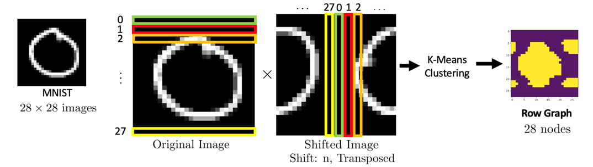
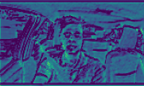
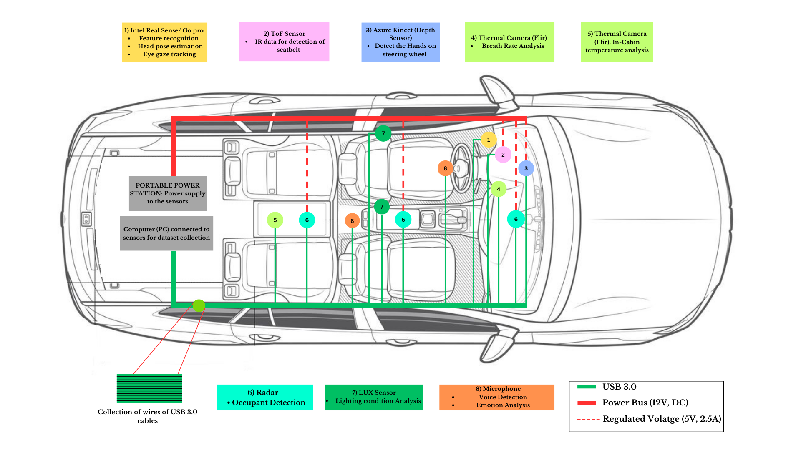
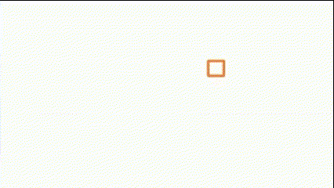
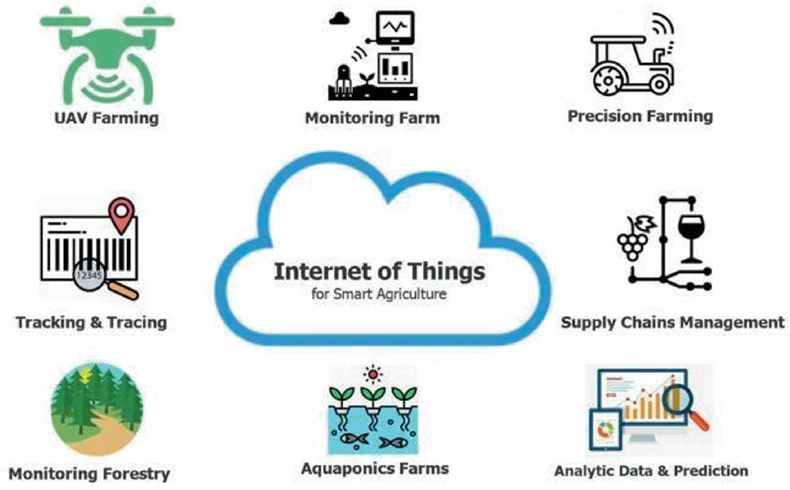

Mayur S Gowda
Researcher | Graph Signal Processing & Machine Learning | Computer Vision | M.S. @ CMU ECE
About Me
Hii, I am a Machine Learning Researcher passionate about applying graph-based methods, deep learning, and computer vision to solve real-world problems. I hold a Master's degree in Electrical and Computer Engineering from Carnegie Mellon University, where I currently work as a Research Assistant under the mentorship of Prof. José M. F. Moura.
Previously, I completed my Bachelor's in Telecommunication Engineering at Ramaiah Institute of Technology, Bangalore, India, graduating with top honors. After which, I worked as a Research Associate under the mentorship of Prof. Viswanath Talasila, at the Center for Imaging Technologies, for a project sponsored by Stellantis. I have also conducted research at prestigious institutions such as the Indian Institute of Science (IISc) under the guidance of Dr. S. N. Omkar, and also at the Indian Space Research Organization (ISRO).
Research Experience
-
Inferring the Graph Structure of Images for Graph Neural Networks (CMU)
Image datasets such as MNIST are a key benchmark for testing Graph Neural Network architectures. The images are traditionally represented as a grid graph with each node representing a pixel and edges connecting neighboring pixels (vertically and horizontally). The graph signal is the values (intensities) of each pixel in the image. The graphs are used as input to a graph neural network (e.g., Graph Convolutional Neural Networks (Graph CNNs), Graph Attention Networks (GAT)) to classify the images. In this work, we improve the accuracy of downstream graph neural network tasks by finding alternative graphs to the grid graph to represent the dataset images, following the approach from the papers “Learning the causal structure of networked dynamical systems under latent nodes and structured noise [1]” and “Inferring the graph of networked dynamical systems under partial observability and spatially colored noise [2]”. We find row and column correlation graphs for each image in MNIST and Fashion-MNIST using correlations between the pixel values using the method in [1, 2]. We form the graph representing the image using the row and column graphs. We show that using these different graph representations as input into Graph CNNs and GAT improve the accuracy over using the traditional grid graph and other graph methods in the literature.
-
Behavior Classification using Neuron Data and Prediction of the Underlying Graph Network (CMU)
This research aims to develop a multi-class behavior classification system to analyze mouse behavior using convolutional neural networks (CNNs). Neural activity, captured as neuron spike data over a 4-hour period, is preprocessed into time-series segments via windowing, summing spikes for each neuron ID associated with specific behaviors. Behavior instances, observed at 60 fps, are linked to these time-series data to establish behavior-time associations. Cross-correlation matrices ((N×N), where N is the number of neurons) are computed for neuron pairs within each behavior instance across time lags, and then reduced into feature vectors for K-means clustering. Clustering identifies connected (active) and unconnected neuron pairs, forming adjacency matrices representing neuron-pair relationships for each behavior. These adjacency matrices are input into a 1D CNN to classify behaviors and uncover the underlying neural networks contributing to specific actions.
-
Gesture Recognition for ALS Patients (CMU)
Amyotrophic lateral sclerosis (ALS) is a debilitating motor neuron disease that severely restricts voluntary muscle movement, often leaving patients unable to communicate their needs or alert others in emergency situations. To address this challenge, we propose a method using electromyography (EMG) signals obtained from surface electrodes placed on the eyebrows to classify specific gestures as a means of communication for ALS patients. The gestures under consideration include raising the eyebrows, forcefully blinking, and a resting condition that indicates no movement. EMG timeseries data were collected from a single ALS patient over a duration of 2 hours, during which the patient was instructed to perform these specific gestures. This data was subsequently processed to extract classical mathematical features such as variance, mean, and slope sign changes, alongside the computation of correlation vectors to enhance the distinction between the gestures. For the classification task, we utilized a one-dimensional convolutional neural network (1D-CNN) to effectively model the combination of both classical features and correlation vectors, facilitating accurate gesture recognition. This approach not only aids in distinguishing subtle muscle activities in ALS patients but also has the potential to significantly improve their ability to communicate in critical situations.
-
Free-Throw Prediction in Basketball Sport using Object Detection and Computer Vision (IISc)
The most important things that must be taken care of in a basketball game include teamwork, perfect team coordination, and execution of the skills of the players at the right point of time, without which it will be difficult to win a game. So, a player must realize these things while he is playing, but in order to do that, he must analyze his posture and the way he plays the game. In order to help the players, a system is developed using computer vision techniques which provides better insights into improving games using deep learning algorithms such that the insights can be used in improving the player performance and strategies in individual or team games. This paper provides a deeper knowledge of the kinematic and physiological markers that might better capture athletic performance by looking at the present state-of-the-art AI approaches by analyzing how AI methods and techniques are applied in basketball play. This work mainly concentrates on the Basketball sport, in which different features such as the release angle of the basketball, and the shot predictions are analyzed and tested in real-time. The object detection is performed using the YOLOv5 algorithm and we have obtained a mean average precision of 96.8%. Further, the release angle is calculated using the combination of pose landmarks and object detection and has resulted in the optimal angle for a perfect free throw, which is to be within the range of 45 to 60°. Based on the combination of object detection, release angle, and the polynomial regression, shot prediction is performed and has resulted in accurate results for real-time experimental analysis.
-
Every Step Counts: Foot-Ground Contact Detection In Human Movement through Video Analysis (IISc)
We introduce a novel approach for detecting foot ground contact using computer vision techniques, validated by force-sensitive resistor (FSR) data. Our method involves analyzing video footage synchronized with FSR data to automatically detect foot-ground contact during various activities. Mask detection algorithms track foot positions in video frames, and we calculate the longest distances within each mask to identify foot points. By comparing these points to a predefined threshold, we determine whether contact has occurred. The results are visualized by annotating the video frames with contact information, providing a non-intrusive and automated solution for gait-analysis. This approach eliminates the need for invasive sensors or physical contact and offers potential applications in sports science, rehabilitation, and other fields requiring foot-ground interaction analysis. Experimental evaluations demonstrate the method’s effectiveness and accuracy, with FSR data validating its performance across diverse scenarios.
-
Novel In-Cabin Sensing for Driver Safety and Comfort (RIT)
Driver fatigue, manifesting as drowsiness and loss of concentration, poses a significant risk to road safety. We present a novel real-time approach for detecting driver fatigue by combining feature recognition, head pose estimation, and eye gaze tracking. Utilizing 3D landmarks from the MediaPipe framework, our method provides a comprehensive assessment of driver alertness in both real-world and controlled environments. Our system leverages the YOLOv5 algorithm for feature recognition to extract crucial driver cues and employs advanced 3D facial landmarks from MediaPipe for precise head and eye position estimation. This multimodal approach effectively evaluates driver concentration and alertness, focusing on critical fatigue indicators such as drowsiness and yawning. The face mesh, with 468 facial landmarks, calculates head position, eye position, and blink patterns to accurately identify signs of sleepiness. A total of 17 subjects participated in the data collection, driving the car under various lighting conditions and 13 subjects for in lab data collection under different lighting conditions. This diverse dataset was instrumental in training and testing the model, ensuring its robustness and adaptability to real-world scenarios. By integrating these techniques, our approach offers robust detection of driver fatigue and concentration levels, enhancing road safety.
-
Design and Development of a Controller for Piezo-based Fast Steering Mirror (ISRO)
The project aims at designing, developing, and testing a Control system for a piezo-based fast steering mirror (FSM). To establish a link between the transmitter and the receiver satellites, Pointing, Acquisition, and Tracking (PAT) systems are used. The PAT system is normally composed of three components: coarse pointing assembly (CPA), fine pointing assembly (FPA), and point-ahead assembly (PAA). The CPA provides wide-angle steering. It employs a wide dynamic range of gimbals and wide field-of-view (FoV) image sensors, based on a charge-coupled device (CCD) or complementary-metal-oxide semiconductor (CMOS). The image sensors can provide a sufficiently high frame rate and good positioning accuracy required for fine tracking. The FPA detector provides more precise, faster Line of Sight (LOS) alignment and a narrower steering angle. To accomplish this, FPA employs an FSM and a position-sensitive detector which is a quadrant PIN photodiode (QPD). The Fast-steering mirror present in FPA is adjusted with the help of an FSM drive (actuators) which are controlled with the help of a PID control system that has been designed. The analog signals sensed by the QPD sensors are passed through the ADC converter which then provides the equivalent digital values or signals using which the required position or coordinates are calculated and then the coordinate values are passed through the designed control system to reduce the error. Further, the digital signals are converted back to analog signals using the DAC converter, which is fed to the FSM drive to accurately position the FSMs.
Publications & Workshop Presentations
-  Inferring the Graph Structure of Images for Graph Neural Networks (GSP-Workshop 2025)
-  A Multimodal Approach to Detect Driver Drowsiness (I4C 2024)
-  A Robust Driver Distraction Estimation Technique for ADAS Applications (ADCIS 2023)
-  Free-Throw Prediction in Basketball Sport using Object Detection and Computer Vision (CVIP 2023)
-  Survey on Crop Production and Crop Protection (ICCI 2022)